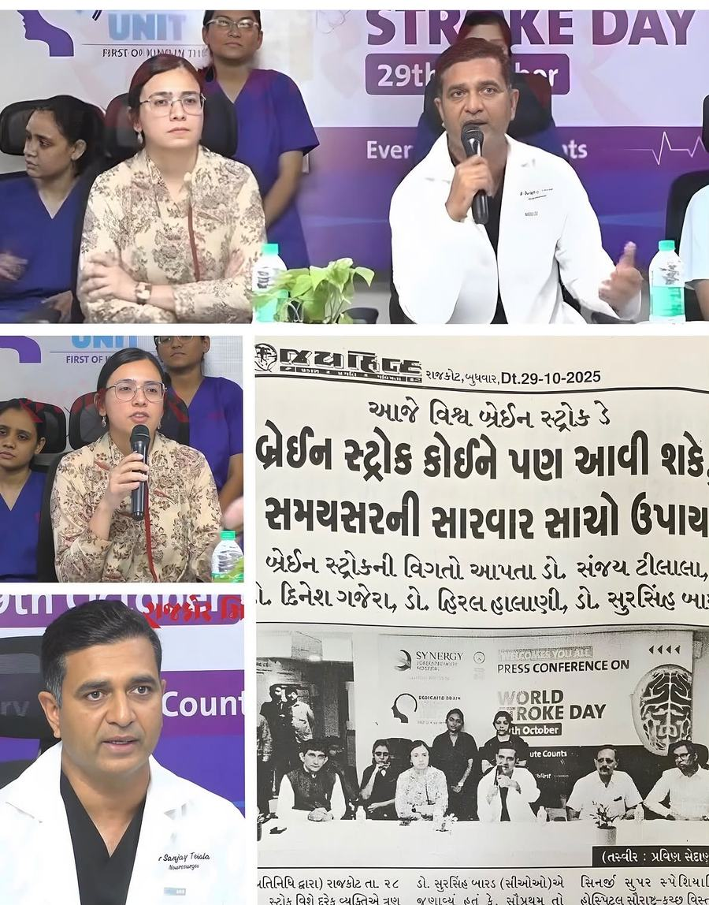
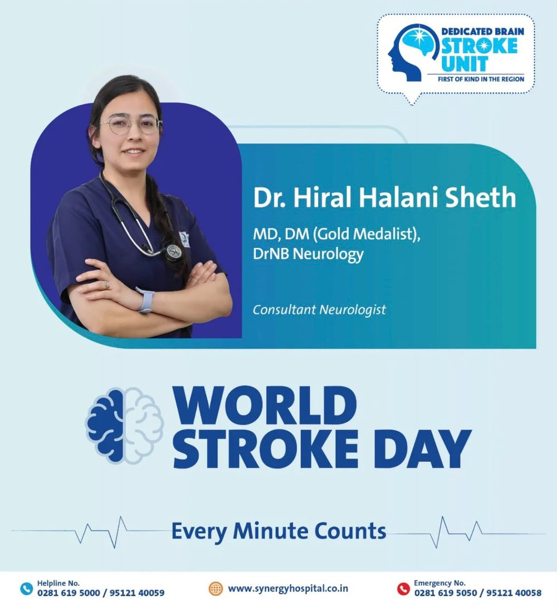

Full spectrum
Comprehensive neurology care
Dr. Hiral manages the full range of brain and spine conditions.
Stroke
In stroke, the treatment is time.
In stroke, the treatment is time.
Sudden signs — go to the emergency department now
Face drooping, arm weakness, slurred speech, sudden imbalance or vision loss, worst-ever headache.
Note the exact time symptoms started.
Synergy Superspeciality Hospital runs a dedicated brain stroke unit.

Conditions treated
Brain and spine, beyond nerve and muscle.
Headache & migraine
Migraine, tension-type, cluster and medication-overuse headache.
Epilepsy & seizures
Diagnosis with EEG, the right drug for the seizure type, and planning for pregnancy.
Vertigo & balance disorders
BPPV, vestibular neuritis, Meniere's disease and vestibular migraine need different treatment.
Parkinson's disease & tremor
Slowness, stiffness and tremor — with treatment adjusted over years.
Memory loss & dementia
Reversible causes are excluded first; the work is with the family as much as the patient.
Multiple sclerosis & related disorders
MS, NMOSD and MOG-associated disease need accurate separation.
Sleep disorders
Sleep apnoea, restless legs, REM sleep behaviour disorder and long-standing insomnia.
Neck, back and radiating limb pain
Nerve conduction establishes whether a nerve root is genuinely compressed.

Prevention
Most of a neurologist's work should happen before the emergency.
Most strokes in this region come from risk factors that stay silent until the day they are not.